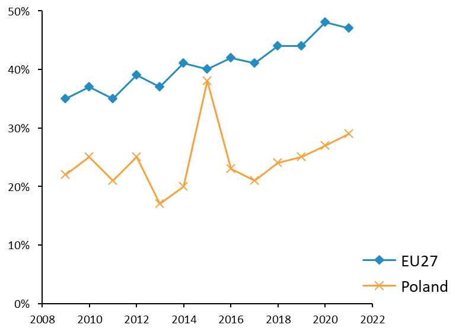
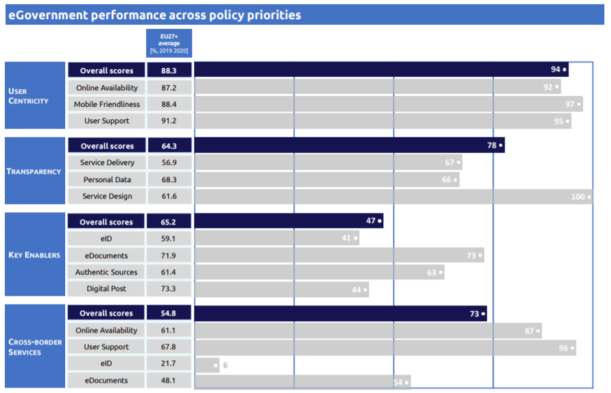
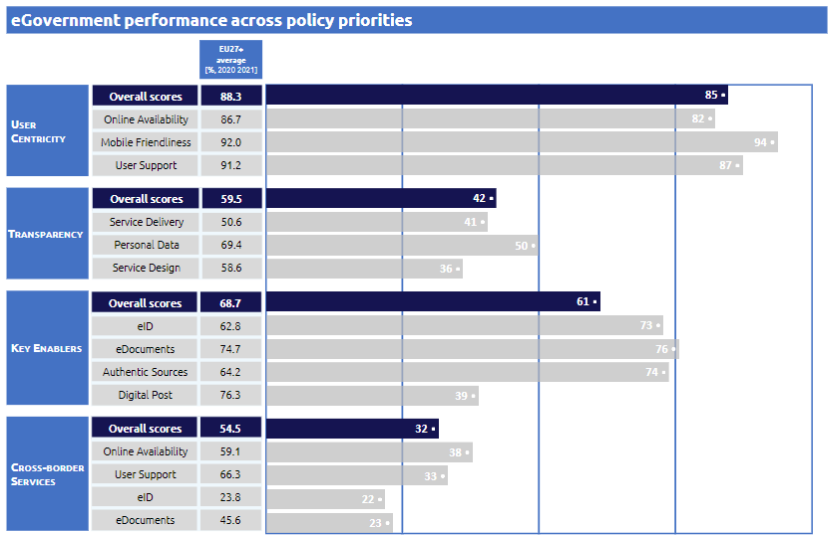

Digital Public Administration factsheet 2021
Poland
Digital Public Administration factsheet 2022
Table of Contents
2 Digital Public Administration Highlights 9
3 Digital Public Administration Political Communications 11
4 Digital Public Administration Legislation 20
5 Digital Public Administration Governance 31
6 Digital Public Administration Infrastructure 34
7 Cross-border Digital Public Administration Services 46
Country
Profile
1
Country Profile
Digital Public Administration Indicators
The following graphs present data for the latest Digital Public Administration Indicators for Poland compared to the EU average. Statistical indicators in this section reflect those of Eurostat at the time the factsheet is being prepared.
Percentage of individuals using the internet for interacting with public authorities in Poland  | Percentage of individuals using the internet for obtaining information from public authorities in Poland  |
Percentage of individuals using the internet for downloading official forms from public authorities in Poland | Percentage of individuals using the internet for sending filled forms to public authorities in Poland |
|  |  |
Interoperability State of Play
In 2017, the European Commission published the European Interoperability Framework (EIF) to give specific guidance on how to set up interoperable digital public services through a set of 47 recommendations. The picture below represents the three pillars of the EIF around which the EIF Monitoring Mechanism was built to evaluate the level of implementation of the EIF within the Member States. It is based on a set of 71 Key Performance Indicators (KPIs) clustered within the three main pillars of the EIF (Principles, Layers and Conceptual model), outlined below.
Source: European Interoperability Framework Monitoring Mechanism 2021
Source: European Interoperability Framework Monitoring Mechanism 2021
Source: European Interoperability Framework Monitoring Mechanism 2021
Source: European Interoperability Framework Monitoring Mechanism 2021
eGovernment State of Play
The graph below presents the main highlights of the latest eGovernment Benchmark Report, an assessment of eGovernment services in 36 countries: the 27 European Union Member States, as well as Iceland, Norway, Montenegro, the Republic of Serbia, Switzerland, Turkey, Albania and Macedonia (referred to as the EU27+).
The study evaluates online public services on four dimensions:
- User centricity: indicates the extent to which a service is provided online, its mobile friendliness and its usability (in terms of available online support and feedback mechanisms).
- Transparency: indicates the extent to which governments are transparent about (i) the process of service delivery, (ii) policy making and digital service design processes and (iii) the personal data processed in public services.
- Cross-border services: indicates the extent to which users of public services from another European country can use the online services.
- Key enablers: indicates the extent to which technical and organizational pre-conditions for eGovernment service provision are in place, such as electronic identification and authentic sources.
The 2022 report presents the biennial results, achieved over the past two years of measurement of all nine life events used to measure the above-mentioned key dimensions. More specifically, these life events are divided between seven ‘Citizen life events’ (Starting a small claim procedure, Moving, Owning a car, Health measured in 2021, and Career, Studying, Family life, measured in 2020) and two ‘Business life events’ (Regular Business Operations, measured in 2021, and Business start-up, measured in 2020).
Source: eGovernment Benchmark Report 2022 Country Factsheet
Digital Public Administration Highlights
2
Digital Public Administration Highlights
 | Digital Public Administration Political Communications |
Digital Public Administration Legislation |
The Act on Electronic Delivery was adopted by the Parliament on 18 November 2020 and has come into force on 5 October 2021 (with prolonged vacatio legis for some specific provisions). The aim of the act is to set up Electronic Addresses Register together with its online services and enable public entities to send and receive as many correspondences as possible within the administration and with citizens and entrepreneurs by means of the trust services
 | Digital Public Administration Infrastructure |
Digital Public Administration Political Communications
3
Digital Public Administration Political Communications
Specific political communications on Digital Public Administration
Berlin Declaration on Digital Society and Value-Based Digital Government
In December 2020, the Polish government signed the Berlin Declaration on Digital Society and Value-Based Digital Government, thus re-affirming its commitment – together with other European Union (EU) Member States – to foster digital transformation in order to allow citizens and businesses to harness the benefits and opportunities offered by modern digital technologies. The Declaration aims to contribute to a value-based digital transformation by addressing and strengthening digital participation and digital inclusion in European societies.
Strategy for Responsible Development
The Strategy for Responsible Development for the period up to 2020 (including the perspective up to 2030) determines basic conditions, objectives and directions for the country development in social, economic, environmental and territorial terms for 2020 and 2030. The main objective of the strategy is to create the conditions for an increase in the income of Polish citizens while improving social, economic, environmental and territorial cohesion. The key indicators of the strategy include the growth of Polish GDP per capita up to 95% of the EU28 average by 2030, and a drop in the risk of poverty and social exclusion indicator to 17 by 2030.
Ensuring a high and stable growth rate will be facilitated by the implementation of the following measures among others:
- Total investment growth to account for 22-25% of the GDP by 2020 and 25% by 2030;
- Increase in the share of research and development (R&D) expenditures to 1.7% of the GDP by 2020 and 2.5% by 2030;
- Average annual growth rate of exports of 7.2% by 2020 and 6.8% by 2030; and
- A 10% share of advanced technology products in total exports by 2020 and 15% by 2030.
The main objectives include eGovernment measures, particularly those involving the effective use of information and communication technologies (ICT) in the public administration. The concept of eGovernment and digital public services implies that high-quality services for citizens, including entrepreneurs, are to be provided by modern information technology (IT) solutions supporting a logical and coherent government IT system, developed and maintained with the cooperation of all actors at various levels of public administration.
A priority task in the field of eGovernment is to allow the widest possible range of public services to be provided digitally, thereby enabling citizens to handle their businesses remotely. To that end, it will be necessary to ensure the interoperability of public IT systems and to computerise the internal processes of the administration.
In this field, the strategy sets out the following measures:
- Providing eServices relevant for citizens and entrepreneurs;
- Creating a single information and eServices website for the government administration;
- Introducing a uniform and secure system for identifying citizens (eID) in the eServices systems of the public administration;
- Ensuring a dominant share of digital document flow on administration and economic trade;
- Increasing access to public sector information, including through application programming interfaces (APIs) for software developers;
- Adopting a standard for digital documentation management systems in public administration, guaranteeing an efficient exchange of information with the public administration’s domain-specific systems; and
- Integrating the eGovernment data processing infrastructure and the development of a State register system, ensuring the necessary reliability and availability of eGovernment systems and their integration.
Other elements link this strategy to the European Commission’s Digital Single Market Strategy, whose implementation is governed and monitored be the Chancellery of the Prime Minister.
While the implementation of the fundamental objectives of this strategy continues, a certain correction of the specific objectives and mechanisms of the implementation programme has been elaborated in the form of the post-pandemic New Deal Programme, which responds to the changes in the geopolitics and the global economy. The programme was announced in the spring of 2021.
- A low fixed broadband coverage;
- A relatively low efficiency of public administration;
- A relatively low level of use of eGovernment; and
- A very low percentage of adults who engage in lifelong learning.
The report recommended the development of broadband networks, and an improvement in the quality and efficiency of public services through digitalisation. The method for implementing eServices includes mechanisms to prevent the phenomenon of ‘digitalisation bureaucracy’, forcing the positive impact of projects on administrative processes, and to train as many people as possible in the use of ICT to improve their quality of life, also socially, and increase the competitiveness of the labour market.
By the end of 2021, over 1 000 000 households were connected to high-speed internet. Human capital-related actions resulted in 227 540 people trained in using internet, including eServices, and more than 121 300 acquiring increased digital competences. In the area of eAdministration, 99 new public eServices and 87 new databases accessible through API were provided.
Integrated State Digitalisation Programme
The Integrated State Digitalisation Programme (PZIP) was adopted in January 2014 and last amended in September 2019. This strategic document defines government actions aimed at developing the public administration using modern digital technologies and, as a result, improving the functioning of the State, while creating conditions that facilitate citizens’ communications with the public administration, and the use of information resources and shared solutions for their needs.
In other words, the main objective of the PZIP is to modernise public administrations with the use of digital technologies, thus improving the efficiency of the State and the quality of the relations between the administration, citizens and other stakeholders.
State Information Architecture
In 2018 the former Ministry for Digital Affairs (now the Chancellery of the Prime Minister), in cooperation with other institutions, created the State Information Architecture and entrusted it with the task to organise the IT systems and adopt a method for managing their development in accordance with the guidelines of the PZIP.
The State Information Architecture contains principles, standards, models and management processes, as well as elements necessary to implement the digital vision of the State covering legal, organisational, semantic and technical layers.
The developed concept allows for an agile approach to the process of organising and expanding the architecture of the State’s information systems.
Interoperability
State Information Architecture
The State Information Architecture (application of enterprise architecture to the digital State management) consists of a vision of the future architecture and models, standards and documentation, which is the basis for planning development and ensuring the consistency of IT activities undertaken by various institutions. Three processes were launched:
- Management of the Digital Administration Development, which is a process designed to reduce systems and products’ complexity, including the Architecture Vision and IT Action Plan;
- Architecture Assurance, which is a process designed to ensure the conformity of projects with the Architecture Vision, the architecture principles and standards, as well as the IT Action Plan; and
- Principles and Standards Management, which is a process to define and maintain the architecture standards and produce a catalogue of standards.
The work is done in accordance with the European Interoperability Reference Architecture (EIRA) and the European Interoperability Framework (EIF).
Key enablers
Access to public information
Open Data Programme
In February 2021, the Council of Ministers adopted a resolution on the Open Data Programme 2021–2027. It is the follow-up document to the first governmental document dedicated to opening public data, the Open Data Programme 2016–2020.
The document defines the priorities of the government in opening access to data. The Open Data Programme aims to develop an ecosystem in which a large amount of good quality data will allow for the development of innovative solutions, increase the transparency of the activities of administrative bodies and increase the quality of research, accelerating scientific progress.
In 2019, as a continuation of the project ‘Open data - access, standard, education’ a new project called Open Data Plus was inaugurated. Under the project, new datasets are released through API and two new tools are established within the Chancellery of the Prime Minister to support the opening of public data, i.e. the Open Data Laboratory (technical and legal advice) and the Open Data Academy (trainings).
Open Data Standards
Opening public data makes public administration activities more transparent and allows civic control thereover. In 2018, the former Ministry for Digital Affairs (now the Chancellery of the Prime Minister) published guidelines to prepare and share data for reuse. The guidelines concerned the API standard, the security standard, the technical standard and the legal standard. The Ministry for Digital Affairs elaborated them as part of the project ‘Open data – access, standard, education’ to ensure that data provided by the public administration would be of a higher quality. Open data may now be reused for research or business purposes.
In 2019, open data standards were subject to extensive public consultations. Most of the proposals submitted during the consultations were implemented in the new versions of the documents published in 2020. This will trigger an increase in the quality of data provided by the administration and used in innovative products and services.
eID and Trust Services
No political communication has been adopted in this field to date.
Security aspects
Cybersecurity Strategy
The strategy defines five specific objectives that should be fulfilled by the government:
- Developing the national cybersecurity system (including the adoption of the provisions of the Cybersecurity Act into the Polish legal system);
- Increasing the level of resilience of information systems of the public administration and private sector, and achieving the capacity to effectively prevent and respond to incidents;
- Increasing the national capacity in the area of cybersecurity technology;
- Raising public awareness and competences in the area of cybersecurity; and
- Ensuring the Republic of Poland has a strong international position in the area of cybersecurity.
In addition, the strategy is in line with the obligations laid down in the Network and Information Security (NIS) Directive with regard to the adoption of the national cybersecurity strategies by Member States. Lastly, it establishes an effective public-private partnership (Programme for Cooperation in Cybersecurity) with global and national technological companies that aims to strengthen the cooperation in areas such as information sharing on incidents or vulnerabilities, education, cyber hygiene, etc.
Interconnection of base registries
Efficient State Strategy 2020
According to the Efficient State Strategy 2020, high interoperability of all IT systems and public registers is a fundamental condition for the implementation of common standards for electronic communication in the public sector and for the provision of reference data for current office work. The possibility of automatic verification of data provided by persons using public services with reference data from public registers will allow to improve the current work of public entities, which are obliged to perform the tasks specified in the law, and at the same time will speed up the settlement of matters.
The Personal Data Registry (PESEL) shall be a reference set of data about citizens. It is necessary to introduce and enforce principles for limiting to the necessary minimum the range of data which will be required from the citizen when dealing with official matters. Units keeping registers must have the obligation of mutual exchange of information and direct information requests from registered entities should only be possible if the data obtained from other records are insufficient. Since 1 January 2022, government administration bodies, as well as law enforcement bodies, courts, organisational units of the prosecutor’s office, local government units and their bodies that keep a public register using ICT systems have to verify the data entered with the data in PESEL.
Two-way communication between secondary and primary records (supplied directly with data obtained from the registered entities) should be provided. A modern and secure IT infrastructure, built on robust integrated tele-information systems, is now the basis for the functioning of offices and the exchange of information between offices and citizens, as well as the offices themselves and other public bodies.
Currently, the government is programming the new Efficient and Modern State Strategy 2030.
eProcurement
eProcurement Project 2020–2026
The Ministry of Economic Development and Technology is currently working on the development of an eProcurement project in partnership with the Chancellery of the Prime Minister. The project involves the gradual implementation of a new service among entrepreneurs, from October 2021 until October 2026. The new service, that was launched in October 2021, provides a new, fully electronic correspondence exchange channel to be established between the public administration, citizens and entrepreneurs.
Domain-specific political communications
No political communication has been adopted in this field to date.
Emerging Technologies
Artificial Intelligence (AI)
The policy covers six areas:
- AI and society: carrying out activities to foster awareness of digital competences;
- AI and innovative companies: supporting Polish AI enterprises and fostering cooperation between start-ups and the government;
- AI and science: supporting the Polish scientific and research community in designing interdisciplinary challenges or solutions in the field of AI;
- AI and education: carrying out activities from primary education to the level of universities;
- AI and international cooperation: implementing activities supporting Polish businesses in the field of AI and technology development in the international arena; and
- AI and the public sector: supporting the public sector in the implementation of AI programmes.
The Ministries will prepare annual action plans for AI implementation. They will be regularly assessed by experts and special teams will be set up to advise public authorities on how to implement this technology as effectively as possible.
In this framework, the AI Programme, launched in July 2019 and placed now at the Chancellery of the Prime Minister, is comprised of three main pillars: education, strategy and technical projects. Projects developed under the programme aim to provide both educational and technical solutions facilitating the implementation of AI in all sectors of the economy, with particular focus on the use of AI in public administration in order to improve the quality of services offered to citizens and businesses.
Distributed ledger technologies
Blockchain
The Working Group on Distributed Ledger Technology (DLT)/Blockchain gathers a wide representation of blockchain market stakeholders. They are interested in ensuring adequate conditions for the development of blockchain solutions in various sectors of the economy as well as in the public sector by identifying market areas where State involvement might be both expected and necessary.
The working group serves as a platform for cross-sectoral cooperation, where different points of view, interests, as well as legal, regulatory, organisational and cultural conditions can be explored and discussed. This has already become an opportunity to expand the field of debate and support discussions of specialised financial market regulators on the Capital Market Development Strategy or fintech. An example of joint work by fintech blockchain market stakeholders is the SIRA standardisation platform for a mobile wallet application, which enables shareholders of non-public companies to manage shares registered in various banks.
Big data
No political communication has been adopted in this field to date.
Cloud computing
No political communication has been adopted in this field to date.
Internet of Things (IoT)
Internet of Things
Then, since January 2020, the group has been focusing on developing projects which support common use of the IoT in the following areas:
- Smart cities and smart homes/buildings;
- Smart agriculture;
- Healthcare system;
- Smart transport;
- Standardisation; and
- Legislation.
In order to stimulate and encourage local governments, and small and medium-sized enterprises (SMEs) to implement IoT solutions, the Chancellery of the Prime Minister has been continuing the activities started in 2019, in particular by:
- Organising a series of seven conferences on the ‘Prospects for IoT development in Poland – Self-Governments of the Future’ in cooperation with the Chancellery of the President of Poland (January–June 2020);
- Sharing a one-access-point library with information on a variety of funds available for innovative solutions; and
- Encouraging local governments to contribute to the Map of Innovations in Poland covering examples of application of new technologies (IoT/AI) in local government units, scientific units and/or public administration institutions.
- Additionally, in 2020 the Chancellery analysed - in cooperation with the Ministry for Justice, the Ministry of Finance, the Office of Competition and Consumer Protection, and the Polish Financial Supervision Authority - issues raised by the IoT Working Group relating to the lack of regulations regarding IoT devices liability, especially in B2B and B2A trade relations.
High-performance computing
No political communication has been adopted in this field to date.
High-speed broadband connectivity
National Broadband Plan
Connectivity and Information Projects of the Minister for Digital Affairs
The Minister for Digital Affairs also conducts numerous information activities supporting the development of the network in the country, including by publishing information material on charges for using a road lane in telecommunications investments as well as guides and brochures, such as ‘Construction of telecommunications infrastructure in the road lane. A guide for road managers’ and ‘The Mega-bill and the reduction of costs of building broadband networks’. These publications concern issues related to the Act of 7 May 2010 on Supporting the Development of Telecommunications Services and Networks (the so-called Mega-bill), and the reduction of costs of building broadband networks. They were published on the website of the Ministry and widely distributed among local self-government units and telecommunications undertakings.
Others
Special Task Team for Breakthrough Technologies
The Special Task Team for Breakthrough Technologies was formed on 28 March 2022 by a decision of the chairman of the Council of Ministers Committee for Digital Affairs. The team is to develop and coordinate initiatives encouraging wide-spread deployment of emerging digital technologies both in public administrations and businesses. Some of the activities will be a continuation of existing ones (such as the above-mentioned working groups for AI, IoT and blockchain), while others will be new, including a Safe Quantum Communication Working Group and a Working Group for High-Performance Computing (HPC).
Digital Public Administration Legislation
4
Digital Public Administration Legislation
Specific legislation on Digital Public Administration
Act on the Computerisation of the Operations of the Entities Performing Public Tasks
The Act on the Computerisation of the Operations of the Entities Performing Public Tasks was adopted by the Sejm on 17 February 2005 and came into force on 21 July 2005 (and was subsequently amended in 2010, 2014, 2016, 2018, 2019, 2020 and 2021). It granted citizens and businesses the right to contact public authorities electronically. It also set up horizontal/infrastructure programmes for all sectors of public administration and established a national interoperability framework for IT systems in the Polish public sector.
This law was essential for the standardisation and interoperability of public administration systems, front and back-office integration of public administration systems, in particular the Electronic Platform of Public Administration Services (ePUAP), the central repository of electronic document templates, and the supervision and support of IT projects in public administration at both central and local levels. Moreover, it established the public electronic identification (eID) scheme under which two eID means for natural persons are issued. It also enabled citizens to confirm their identity or rights (e.g. for driving licenses) using a mobile device instead of documents intended for this.
The amendment in 2019 also introduced the System of State Registers as an organisational and technical tool serving public registers. The act obliged the Minister for Digital Affairs to determine technological standards for the System of State Registers, including standards for data exchange between registers. Entities managing public registers are obliged by the act to verify data which are registered for the first time with data in PESEL.
A new amendment, aimed at introducing the ‘digital by default’ principle in the way the administration operates, is under preparation and is expected to enter into force by the end of 2022. The amendment will set out common rules for public entities including digital documents and electronic communication by default in administration and economy (the primacy of electronic communication), the possibility of using only one means of eID (the principle of one login for every citizen and entrepreneur), the use of one gateway to public services (GOV.PL), as well as solutions limiting data redundancy and data exchange of public ICT systems.
Act on Electronic Delivery
The Act on Electronic Delivery was adopted by the Parliament on 18 November 2020 and came into force on 5 October 2021 (with prolonged vacatio legis for some specific provisions). The aim of the act is to set up the Electronic Addresses Register together with its online services, and enable public entities to send and receive as many correspondences as possible within the administration and with citizens and entrepreneurs by means of trust services. As a result, since 5 October 2021 people who express such a statement of will have become able to receive registered correspondence from administration institutions without having to go to the post office. eDelivery is now the legal equivalent to sending a traditional registered letter with acknowledgment of receipt or delivering it in person.
Along with the adoption of the act, the electronic delivery service standard, based upon ETSI standards, was completed. The document defines the manner of providing electronic registered delivery services by service providers, including the designated operator. The standard has been published on the Public Information Bulletin website of the Ministry for Digital Affairs in Polish language.
Interoperability
Regulation on the National Interoperability Framework
The Regulation on the National Interoperability Framework, minimum requirements for public registers and information exchange in electronic form, and minimum requirements for ICT systems, adopted on 12 April 2012 by the Council of Ministers, was further amended in 2014, 2016 and 2017.
Act on the Computerisation of the Operations of the Entities Performing Public Tasks
Since the beginning of 2021, the Chancellery of the Prime Minister has been working on the amendment to the Act on the Computerisation of the Operations of the Entities Performing Public Tasks. The amended act will set out provisions related to e.g. reference data, interoperability recommendations and interoperability repository, thus recognising the importance of the interoperability key concepts and definitions that are currently defined in the Regulation on the National Interoperability Framework. The new version of the act will also provide the legal basis for the State Information Architecture, for the reference catalogues (public entities, cases, eServices, document templates, administration processes and registers) as well as for the public IT systems inventory (SIST).
Key enablers
Access to public information
Act on Access to Public Information
The Act on Access to Public Information, which came into force in January 2002, allows anyone to demand access to public information held by public and private bodies exercising public functions, as well as trade unions and political parties. These bodies have to officially respond to enquiries within 14 days. Public bodies are also required to proactively publish certain categories of information, i.e. on their policies, legal organisation and principles of operation, the contents of administrative acts and decisions, as well as public assets. The law requires that each of these bodies create a Public Information Bulletin to allow access to information via computer networks. Thus, the official electronic journal for public information – the Public Information Bulletin – was launched in July 2003.
Regulation on the Manner, Scope and Mode of Access to Data Stored in a Public Register
The short Regulation on the Manner, Scope and Mode of Access to Data Stored in a Public Register sets out the scope and mode of access to data stored in a public register by a public body or entity performing public duties under other regulations or by delegation. Furthermore, it clarifies the terms under which someone can resort to a second request for access to data stored in a register.
Act on Open Data and the Reuse of Public Sector Information
The Act on Open Data and the Reuse of Public Sector Information entered into force on 8 December 2021, regulating in a comprehensive manner the issue of open data in Poland and transposing Directive (EU) 2019/2024 on open data and the re‑use of public sector information into national law. The main goal of the new law is to increase the supply of open data and enable their reuse on a larger scale than before. Moreover, it provides for an easier and less formalised process of accessing information for reuse, as it can be requested in any way and should be provided within 14 days. The reuse of PSI will also be possible via an IT system in real time.
The act also distinguishes new categories of public sector information, i.e. (i) high‑value data, that is data whose use is associated with significant socio-economic benefits; (ii) dynamic data, that is data that are updated frequently or in real time; and (iii) research data, that is data that are produced or collected as part of research activities financed from public sources.
Furthermore, the act regulates the functioning of the network of open data officers. They are responsible for improving the quality and increasing the amount of data made available by Ministries, the Central Statistical Office and the Chancellery of the Prime Minister.
Finally, the act introduces a number of other solutions aimed at building a comprehensive regulatory environment, like formulating the principle of data openness, developing a comprehensive terminology, and regulating standard licenses (e.g. creative commons) or the reuse of source codes when the software is developed as part of a public task.
Act on the Digital Accessibility of Websites and Mobile Applications of Public Sector Bodies
The Act on the Digital Accessibility of Websites and Mobile Applications of Public Sector Bodies, setting rules on digital accessibility for persons with disabilities, fully implemented Directive 2016/2102 of the European Parliament and of the Council of 26 October 2016 on the accessibility of the websites and mobile applications of public sector bodies. The act also specifies how to lodge a complaint about the unavailability of information and explains how to monitor digital availability.
eID and Trust Services
Act on Trust Services and Electronic Identification
The Act on Trust Services and Electronic Identification was adopted on 5 September 2016 pursuant to Regulation (EU) No. 910/2014 of the European Parliament and of the Council of 23 July 2014 on electronic identification and trust services for electronic transactions in the internal market. It was then amended in 2018, 2019, 2020 and 2021.
The 2018 amendment established the availability of eServices in Poland through a national node, which is an organisational and technical solution that integrates at a single point all ICT systems in which public online services are made available, with various eID schemes (provided by public or private entities). Users who use eID means issued in eID schemes connected to the national eID node can authenticate in any public online service.
Polish National Electronic Identification Scheme
Poland aligned its national legal system with the eIDAS Regulation through the adoption of the Act on Trust Services and Electronic Identification, establishing the Polish national eID scheme. Its purpose is to allow Polish citizens, companies and other entities to identify themselves online in order to access the public eServices using any eID means connected to the national eID node. This was achieved by integrating eID schemes in the national functioning in order to create a single, standardised access point to eID services.
In 2020, over 300 types of eID means were issued in two eID schemes connected to the national node, i.e. a public scheme provided by the former Ministry for Digital Affairs and MojeID, a private scheme provided by Krajowa Izba Rozliczeniowa S.A. The public scheme comprised a Trusted Profile – an eID means based on an immaterial unit containing personal identification data and a personal profile – and eID means based on the national ID card. The MojeID scheme comprised eID means issued by eight large domestic banks and 508 small local banks.
Amendment to the Act on Identity Cards
The amendment to the Act on Identity Cards introduced an electronic identity card, a new secure tool enabling eID, and an advanced electronic signature called personal signature. Advanced electronic signatures have to be recognised by public bodies, not only administrative bodies. In a private sector relation, e.g. between client and business, they are recognised if all parties agree. If a user wishes to use the ID card, he/she may include a qualified electronic signature certificate from a trust service provider chosen by the holder. Moreover, the International Civil Aviation Organisation (ICAO) application was also implemented in the identity card.
Trust Services
The Act on Trust Services and Electronic Identification established the Narodowe Centrum Certyfikacji (NCCert). It is a public centre provided by the Polish National Bank which issues certificates to qualified trust service providers for the verification of advanced electronic signatures or electronic seals as referred to in Regulation (EU) No. 910/2014, a certificates for the verification of other trust services provided by qualified trust service providers. Apart from qualified electronic signatures, two kinds of electronic signatures shall have the equivalent legal effect of a handwritten signature for public entities: the ‘personal signature’ based on a certificate contained in an electronic chip of the Polish national eID card, and the ‘trusted signature’, i.e. a specific signature which includes a person’s identification data taken from an eID means which is issued under a public eID scheme.
Assistance Act
In connection with the war in Ukraine, Poland has enacted an Assistance Act (Act on Assistance to Citizens of Ukraine in Connection with the Armed Conflict on the Territory of that State). In line with the Assistance Act, Ukrainian citizens can obtain a PESEL number and a Trusted Profile with a simplified procedure. That way, refugees will have access to the digital services of the public administration in Poland.
Security aspects
Act on the National Cybersecurity System
The adoption of the Act on the National Cybersecurity System, on 5 July 2018, transposed Directive (EU) 2016/1148 concerning measures for a high common level of security of network and information systems across the Union into the Polish legal system. This legislation defines the national cybersecurity system, as well as the tasks and responsibilities of the entities in the system. The purpose of the national cybersecurity system is to ensure cybersecurity at national level, including the uninterrupted provision of essential services and digital services, by achieving an appropriate level of security involving the information systems used to provide these services and by providing for incident handling. The act also provides for:
- The scope of the Polish National Cybersecurity Strategy;
- The establishment of a single point of contact for cybersecurity run by the Minister competent for digitalisation;
- The establishment of three Computer Security Incident Response Teams (CSIRTs) at national level and seven competent authorities responsible for cybersecurity within essential sectors in Poland (listed in the annex to the act). Based on the leading role of the three CSIRTs at national level (CSIRT MON, CSIRT NASK and CSIRT GOV), the act created a coherent incident response system, with a certain and clear division of constituencies;
- The institution of the Government Plenipotentiary for Cybersecurity, responsible for the coordination of activities and the implementation of the government policy in the field of cybersecurity. It was set up together with an Advisory Committee for Cybersecurity operating at the Council of Ministers in the capacity of a consultative and advisory body in matters of cybersecurity and the relevant activities of CSIRT MON, CSIRT NASK, CSIRT GOV, the sectoral cybersecurity teams and the competent authorities for cybersecurity. The Government Plenipotentiary for Cybersecurity and the Advisory Committee ensure the coordination of the cybersecurity system at governmental level; and
- The addition of the public administration to the system with regard to incident handling and reporting.
The government decided to maintain and develop its decentralised approach towards a governance structure of its cybersecurity system. There is a clear division of responsibilities and capabilities between all the involved institutions established pursuant to the act. That way, the act allowed the creation of an efficient, comprehensive system enabling stakeholders to detect, prevent and mitigate the impact of incidents that affect Polish national interests, while helping crucial societal and economic activities.
In this context, Poland has almost completed the identification and designation of operators of essential services. Moreover, effective cooperation and coordination mechanisms are in place. Also, a legal act (secondary legislation) – an ordinance of the Minister for Digital Affairs on organisational and technical conditions for entities providing cybersecurity services and internal organisational structures of operators of essential services responsible for cybersecurity – was amended due to market needs.
Act on the Protection of Personal Data
The initial Act on the Protection of Personal Data was adopted on 29 August 1997 and later amended. This act followed the rules established by Directive 95/46/EC on the protection of individuals with regard to the processing of personal data.
The process of making the Polish legal system fully compliant with Regulation (EU) 2016/679 of the European Parliament and of the Council of 27 April 2016 on the protection of natural persons with regard to the processing of personal data and on the free movement of such data and repealing Directive 95/46/EC (General Data Protection Regulation) started in 2016 with widespread public consultations. The process was concluded with the adoption of the Act on Personal Data Protection of 10 May 2018, which came into force on 25 May 2018 replacing the act of 1997. The purpose of the act was to ensure the application of the provisions of the GDPR.
To make the Polish regulations fully compliant, the Minister for Digital Affairs proposed amendments to 162 Polish acts. The activities – involving close cooperation with all relevant institutions, business organisations, public administration and NGOs – resulted in the act of 27 February 2019 amending certain acts related to the application of General Data Protection Regulation.
The Inspector General for the Protection of Personal Data is in charge of enforcing legislation in this field. In case of a breach of the provisions on personal data protection, the Inspector General is instructed to take legal measures ex officio.
Interconnection of base registries
Act on Certain Acts Regarding Public Administration Tasks Related to Some Public Registries
The Act on Certain Acts Regarding Public Administration Tasks Related to Some Public Registries of 23 March 2017 introduced legal modifications to allow citizens to access public administration services without leaving their home, i.e. via IT systems. These changes are in line with the targets of the Paperless Cashless Poland Programme. They are another step to help citizens apply for benefits without having to visit many offices to collect various certificates. In particular, the act:
- Enables users to check online the number of penalty points drivers are assigned for traffic violations. Information on the number of points is available after authentication of the data subject with the Trusted Profile - based on data provided by the police from the records of drivers violating traffic regulations;
- Ensures environmental protection inspectorate bodies access to the Central Register of Vehicles (CEP); and
- Reduces the number of documents (certificates) that must be attached to applications for family benefits, the grand family card and childcare benefits.
Act on Identity Cards
The Act on Identity Cards establishes the procedure for issuing identity cards and the rules determining the Identity Card Registry (an element of the System of State Registers). It identifies the data which can be processed, and the rules for exchanging and verifying data, and describes how data from the Registry can be made available or verified via eServices. The act also contains information on electronic layers and certificates on identity cards. Furthermore, the act enables some actions via eServices (available after authentication):
- Applying for identity cards;
- Suspending and resuming certificates in the electronic layer (in case of temporary loss);
- Reporting loss of identity card (when the holder reports loss of his/her own document, it is registered automatically);
- Verifying identity card validity;
- Verifying if the identity card is ready to be collected; and
- Accessing the registered holder’s data with the possibility of getting a certificate with the data.
- An amendment to the Act on Identity Cards which introduced an eID card containing a facial image of the holder of the card and two fingerprints in interoperable digital formats came into force in 2021.
Act on People Registration
The main function of the Act on People Registration is to define the rules for the functioning of PESEL (an element of the System of State Registers) and to attribute a personal PESEL number identifying persons in all public registers in Poland. PESEL also contains registered data, which include information on Polish citizens and foreigners.
Furthermore, the act includes provisions concerning the exchanging and making available of data, and enables the following eServices (available after authentication):
- Permanent and temporary address registration;
- Change of permanent and temporary address;
- Notification of living in the territory of Poland;
- Notification of return to Poland after living abroad for more than six months; and
- Insight into registered data with the possibility of getting a certificate with the data.
Act on Civil Status Registration
The Act on Civil Status Registration sets out the rules for birth, marriage and death registrations. Moreover, it defines the Civil Status Registry (an element of the System of State Registers) as a source of special data connected with birth, marriage and death. The Registry enables the creation of certificates concerning the above‑mentioned occurrences, registration of divorces, recognition of fatherhood, etc. In addition, the Civil Status Registry updates PESEL and ensures data exchange. Like other registers, the Civil Status Registry enables authenticated users to perform some electronic actions, such as applying for birth, marriage or death certificates, applying for marital status certificates and registering the birth of a child.
eProcurement
General Rules for the Law on Electronic Invoicing in Public Procurement
The Act of 9 November 2018 on Electronic Invoicing in Public Procurement, Concessions for Construction Works or Services and Public-Private Partnerships was introduced in November 2018 to transpose the eInvoicing Directive (2014/55/EU). It has been in force since April 2019.
A voluntary eInvoicing system in the B2B sector was also launched in 2022 and currently legislative work is underway to introduce the obligation to exchange eInvoices both in the B2B and B2G areas.
Law on Public Procurement
The Law on Public Procurement entered into force in March 2004. It enabled the development of eProcurement systems for Polish public administrations, the use of advanced electronic signatures in the submission of tenders and the use of electronic auctions for certain contracts.
In April 2006, the Law on Public Procurement was largely amended in order to implement the provisions of the EU Directives on public procurement (2004/17/EC and 2004/18/EC), including those relating to electronic auctions and the Dynamic Purchasing System. This amended version placed electronic communications between the awarding entity and the economic operator on the same level as written or fax communications, regardless of the procurement procedure in question. Furthermore, it defined cases where transferred data must be supplied with a qualified electronic signature.
In 2017, the Law on Public Procurement was amended again to include the changes introduced by the Act on Trust Services and Electronic Identification of 5 September 2016.
On 1 January 2021, the new Public Procurement Law came into force. Following the most recent EU Directives on public procurement (2014/24/EU and 2014/25/EU), this law provides that all public procurement procedures must be electronic. This obligation applies to all proceedings, regardless of their value. The rules of the new Public Procurement Law take into account the currently applicable solutions for electronic communications. The new solution allows to submit a bid bond in electronic form.
Act on Electronic Invoicing in Public Procurement, Concessions for Construction Works or Services and Public-Private Partnerships
Public institutions must be prepared to receive invoices in the form of electronic documents with prescribed structures. The new regulations aim to develop the so‑called digital economy, limiting the use of paper, as well as saving time and money for entrepreneurs and public institutions. The changes resulted from EU regulations and were part of the implementation of the government programme ‘From paper to digital Poland’.
Domain-specific legislation
Act on Providing Services by Electronic Means
Adopted on 18 July 2002, the Act on Providing Services by Electronic Means entered into force on 10 March 2003. It transposed into Polish law the EU provisions on certain legal aspects of information society services, in particular electronic commerce in the internal market (eCommerce Directive). The act regulates the obligations and responsibilities of the providers of eServices, as well as the protection of personal data of natural persons using eServices. It also addresses the issue of spamming by adopting the opt-in principle.
The act was amended a few times, most notably in 2019.
Act on the Protection of Certain Services Provided by Electronic Means Based on, or Consisting of, Conditional Access
Adopted on 5 July 2002, the Act on the Protection of Certain Services Provided by Electronic Means Based on, or Consisting of, Conditional Access implemented EU Directive 98/84/EC on the legal protection of services based on, or consisting of, conditional access.
Act on Electronic Payment Instruments
Adopted on 12 September 2002, the Act on Electronic Payment Instruments implemented Directive 2000/46/EC on the taking up, pursuit of and prudential supervision of the business of electronic money institutions. The act defines an electronic payment instrument, enables its holder to perform operations by means of an electronic device and enables the electronic identification of the holder, which is required in order to perform an operation.
Act on the Health Information System
The Act on the Health Information System specifies the organisation and principles of operation of the information system in healthcare. The information system processes data which are necessary to conduct the State health policy, improve the quality and availability of healthcare services and finance healthcare tasks. The essential element of the information system is definitely the Medical Information System, an IT system for processing data concerning provided and planned healthcare services, which is made available by service providers’ IT systems.
The main change was the introduction in 2018 of a Patient Internet Account (IKP). The IKP enables to communicate electronically, obtain prescriptions and referrals, and view the history of medical services.
Among other things, the amendment also introduced the obligation to issue electronic prescriptions only as of 8 January 2020 and electronic referrals as of 8 January 2021, and made the exchange of electronic medical records via the P1 system compulsory as of 1 January 2021.
The law is constantly being expanded with new functions of the healthcare information system.
Emerging technologies
Artificial Intelligence (AI)
No legislation has been adopted in this field to date.
Distributed ledger technologies
No legislation has been adopted in this field to date.
Big data
No legislation has been adopted in this field to date.
Cloud computing
No legislation has been adopted in this field to date.
Internet of Things (IoT)
No legislation has been adopted in this field to date.
High-performance computing
No legislation has been adopted in this field to date.
High-speed broadband connectivity
Mega-Bill Act
On 30 August 2019, another amendment to the Act on Supporting the Development of Telecommunications Services and Networks, the so-called ‘mega-bill’, was adopted by the Polish Parliament. This is primarily a legal tool for eliminating white spots in access to broadband internet, implementing even more effectively projects from axis I of the OP Digital Poland (initiative awarded in the context of the European Broadband Awards organised by the European Commission) or connecting schools to the National Educational Network (a project that in 2018 was awarded in the framework of the prestigious WSIS Prizes by the International Telecommunications Union, a United Nations agency).
Thanks to the introduction of statutory changes, it will be possible to increase the availability of broadband services for citizens, including high-performance ones, also in areas where it is currently not possible. This will be achieved thanks to improved profitability of investments in broadband networks through the implementation of cost reduction mechanisms.
Connectivity-related Legislation
Several pieces of legislation related to connectivity and the deployment of broadband in Poland have been introduced since 2016, dealing with:
- Regulated rates of fees for the provision of technological channels - Regulation of the Minister for Digital Affairs of 29 June 2016 on the provision of a technological channel by public road administrators and the amount of fees for the provision of 1 meter of technological channel (Journal of Laws of 2016, item 957);
- Effectiveness of the Telecommunications Information Point - Regulation of the Minister for Digital Affairs of 31 July 2019 on information on technical infrastructure and technological channels and on the rates of charges for the occupation of a road lane (Journal of Laws of 2019, item 1618);
- Harmonisation of EMF limits - Regulation of the Minister of Health of 17 December 2019 on the permissible levels of electromagnetic fields in the environment (Journal of Laws of 2019, item 2448);
- New EMF methodologies - Regulation of the Minister of Climate of 17 February 2020 on methods of checking compliance with the permissible levels of electromagnetic fields in the environment (Journal of Laws of 2020, item 258); and
- The Broadband Fund – Regulation of the Minister for Digital Affairs of 13 April 2021 on the specific conditions of support under the Broadband Fund.
In addition, the adoption of a couple of other acts is currently considered for 2022 and 2023, including the exclusion of telecom investments from environmental assessment obligations (draft amendment to the Regulation of the Council of Ministers), as well as the improvement of the annual inventory of telecom infrastructure and services, and the update of technical requirements for cable ducts (draft amendments to the Regulations of the Minister for Digital Affairs).
Digital Public Administration Governance
5
Digital Public Administration Governance
National
Chancellery of the Prime Minister
The key departments within the Chancellery which are dealing with digital affairs are the following:
- Systems Management Department, whose tasks include maintaining and developing registers, records and systems as well as making data available from registers and improving data quality;
- Digital Competence Development Centre, which pursues public policy in the area of digital skills and accessibility, and coordinates all governmental activities in this field;
- Cybersecurity Department, which covers cybersecurity issues, including the development and implementation of strategic documents and legal acts in the field of cybersecurity, national and international cooperation, and development of guidelines and standards for the implementation of appropriate measures to protect IT systems;
- Services Development Department, whose goal is to facilitate citizens’ access to public administration’s information and services;
- Data Management Department, which is responsible for opening up PSI by creating legal bases for reuse of data held by public bodies and ensuring these data are accessible and usable, maintaining and developing the dane.gov.pl portal, and conducting research and analyses on the data reuse and exchange market. It is also responsible for developing public policy in the field of personal data protection;
- Digital Identity Department, which deals in particular with projects and activities (including shaping policy and public relations) related to the development and implementation of new technologies. In addition, the department is responsible for aspects related to digital identity;
- State Information Architecture Department, which deals with the State Information Architecture and its processes supervising the Architecture Repository;
- Telecommunications Department, which is responsible for issues related to legal regulations regarding the electronic communications market, including in the field of telecommunications, the development of telecommunications services and networks, and services provided electronically. It also coordinates issues relating to broadband network development in Poland; and
- Digital Policy Department, which coordinates international policy in the field of digitalisation.
The Chancellery of the Prime Minister is also the body responsible for interoperability activities. However, according to the national interoperability framework, each public institution, including the ones at self-government level, is accountable for assuring interoperability of its systems and infrastructure. Finally, the Chancellery of the Prime Minister manages the key State registers that create a full system of State registers.
Committee of the Council of Ministers for Digitalisation
The Committee of the Council of Ministers for Digitalisation, established in March 2007, according to the current law, acts as an advisory body to the Council of Ministers and the Prime Minister. Its role is to coordinate and facilitate the implementation of the key actions regarding computerisation, and to ensure their compliance with the strategic direction of the State development. Its main task is to give opinions on the draft legal acts or projects related to computerisation in order to guarantee the interoperability, integrity and complementarity of the solutions to be implemented with the ones already in place or under preparation, as well as the compatibility of their architecture with the State Information Architecture.
Council for Digital Affairs
Ministry of Economic Development and Technology
Within the Ministry of Economic Development and Technology, the Digital Economy Department is responsible for implementing projects related to the regulation and regulatory environment in the field of electronic economy (eEconomy) in particular, with the aim of increasing electronic business transactions, the standardisation and interoperability of solutions in the field of ICT for entrepreneurs, and the development of eCommerce, the data-based economy, the IoT and AI.
Supreme Audit Office
The Supreme Audit Office (NIK) is the auditing body whose purpose is to promote economic efficiency and effectiveness in the public service. It monitors the execution of the State budget and the compliance with the monetary policy guidelines, and conducts audits upon demand of the Parliament or its bodies.
President of the Office for Personal Data Protection
The duties entrusted to the President of the Office for Personal Data Protection include (i) supervising the compliance of data processing with the legal provisions on the protection of personal data; (ii) issuing administrative decisions and considering complaints with respect to the enforcement of the provisions on the protection of personal data; (iii) keeping the register of data filing systems and providing information on the registered data files; and (iv) initiating and undertaking activities to improve the protection of personal data.
Subnational (Federal, Regional and Local)
Regional and Local Authorities
The regional strategies regarding the development of eGovernment services are conceived and designed at the regional level in accordance with the national strategy.
Digital Public Administration Infrastructure
6
Digital Public Administration Infrastructure
Portals
National Portals
The RP Portal - GOV.PL consists of two parts:
- An information part where users can find the websites of:
- All Ministries;
- The Chancellery of the Prime Minister;
- All embassies (in their mother languages);
- All healthcare and epidemiological units;
- The national headquarters of the State Fire Services of Poland;
- Prosecutor’s offices; and
- Other public bodies.
- A transaction part where users can find, among others:
- More than 500 cards with information and access to eServices;
- My Gov – a citizen’s dashboard with personal data available after login;
- A whole list of services and eServices for entrepreneurs.
- Generally, there are over 1 600 services on the RP Portal - GOV.PL, which are on one list of units with a connected search engine. The RP Portal - GOV.PL is based on a design system applicable to the whole administration. All GOV.PL websites comply with Web Content Accessibility Guidelines (WCAG) standards and cybersecurity principles.
- The RP Portal - GOV.PL has also been playing a crucial role during the pandemic, since citizens and foreigners can find all up-to-date information and statistics related to COVID-19, as well as other recommendations. Due to the war in Ukraine and the refugee crisis started at the end of February 2022, a subpage for Ukrainian citizens has also been published. The page contains information related to obtaining a PESEL number and access to education, healthcare, social benefits, labor market and transportation, as well as many other helpful information connected to staying in Poland.
Portal for Entrepreneurs
Biznes.gov.pl is an information and service hub for entrepreneurs, which for years has been offering users a wide range of public administration eServices as well as a comprehensive information base on the rights and obligations related to running a business. It is a service dedicated to people planning and conducting economic activity whose aim is to help in dealing with issues connected therewith by electronic means in a way that is easy and intuitive, and to simplify the formalities required for the establishment and conduct of company.
The legal basis for the website’s operation consists of:
- the Act of 6 March 2018 on the Central Register and Information on Economic Activity and the Information Point for Entrepreneurs;
- the Act of 18 July 2002 on the Provision of Electronic Services;
- the Act of 22 December 2015 on the Principles of Recognition of Professional Qualifications acquired in the Member States of the European Union; and
- the Act of 10 June 2016 on the Posting of Workers as Part of the Provision of Services.
As an information point for entrepreneurs, Biznes.gov.pl also fulfills the obligations arising from Directive 2006/123/EC of the European Parliament and of the Council of 12 December 2006 on services on the internal market (Services Directive) and Regulation 2018/1724 of the European Parliament and the Council of 2 October 2018 on the creation of a Single Digital Gateway. Interoperability and State Information Architecture Portal
In February 2021, the Chancellery of the Prime Minister launched the Interoperability and State Information Architecture Portal. The purpose of the portal is to increase the degree of regional, national and transnational interoperability and ensure a widespread use of the State Information Architecture.
The website provides information on strategies and programmes, legislation, interoperability and architecture frameworks, standards and recommendations, and document structures, as well as on public IT systems and public registers. The portal also contains an extensive collection of information on the State Information Architecture, including architecture principles, architecture vision, architecture models and State information architecture management processes.
Podatki.gov.pl
The podatki.gov.pl portal allows legal and natural persons to declare their taxes online, obtain all necessary tax information and make an appointment with a tax office.
In 2020 a new service called e-Urząd Skarbowy (eTax Office) was launched on the podarki.gov.pl portal, allowing all customers of the National Tax Administration to handle their tax affairs quickly, easily and comprehensively, at any time and from any device. The main available services after logging into the eTax Office include:
- The ePIT pre-filled tax returns (including the tax files PIT-28, PIT-36, PIT-37 and PIT-38), which can be approved or adjusted by the taxpayer before automatic submission. In 2021, 10 million tax returns were filed through the ‘Your PIT’ service;
- Detailed information on fines and the possibility to pay them;
- eMicrocompany, a tool for handling domestic invoices, creating VAT records and generating the uniform control files JPK VAT and JPK_FA;
- Tax micro-account, an individual tax account attributed to each taxpayer to pay the required taxes;
- Online methods for the required payments to the office;
- A letter explaining the purpose of the payment;
- An application for crediting overpayments or tax refunds to other liabilities; and
- An official letter to the office.
Since 2020, the podatki.gov.pl portal has also been a starting point for the podatki.gov.pl/crbr/ service (available also at crbr.podatki.gov.pl). This publicly available service providing information from the Central Register of Beneficial Owners was started in late 2019 and a full range of legal entities have been included since the beginning of 2022. The Register contains information about hundreds of thousands of legal entities and its beneficial owners, and provides information replying to a significant number of queries (millions of queries per month). Data are available free of charge.
Tax and Customs Electronic Services Portal
The Tax and Customs Electronic Services (PUESC) Portal is a portal of the Ministry of Finance and the National Revenue Administration which provides a two-way and secure communication with the external clients of the National Revenue Administration, delivering electronic public services in areas like:
- Import, export and transit of goods;
- Trade in excise goods;
- Transport of goods covered by the monitoring system;
- Statistics of trade in goods among Member States;
- Gambling;
- TAX FREE – VAT refund.
The PUESC Portal is mainly intended for economic operators, representatives and natural persons who trade in goods with foreign countries, and persons who cross the external border of the EU and are subject to duties, among others:
- All Polish and foreign economic operators who clear goods in Poland;
- Economic operators and natural persons who cross the EU’s external border;
- Economic operators who trade in excise goods other than goods covered by the procedure of suspension of the excise duty;
- Taxpayers who acquire and import passenger cars in the EU; and
- Economic operators who trade in excise goods which are subject to fiscal markings.
As of the end of 2021, over 80 eServices were available on the PUESC Portal and 50 additional eServices are expected to be launched within a year.
Dane.gov.pl
Geoportal
Central Registration and Information on Economic Activity
The Central Registration and Information on Economic Activity Platform was launched in 2011. All individuals with a Trusted Profile or an electronic signature can clear all the formalities required to immediately start up, suspend or renew a business. In 2015, less than one out of every ten businesses was set up online. Currently, every second company is registered via the internet. At the height of the COVID-19 pandemic, nearly 70% of businesses were set up electronically.
eCourt
Electronic writ-of-payment proceedings came into force on 1 January 2010. As a result, a new kind of civil proceeding was incorporated into the Polish Code of Civil Procedure. The aim was to increase the efficiency of the procedure and improve the quality of service for the parties in court proceedings, such as citizens or companies. The claimant states the evidence to support their claims but without attaching them to the statement of claim.
Pacjent.gov.pl
The pacjent.gov.pl portal allows users to set up a Patient’s Internet Account (IKP) to obtain information on health-related issues. The IKP is developed with the purpose of creating a single point of access where a patient can find all relevant information regarding one’s health status. It allows the patient to have electronic access to their treatment history and electronic medical records, to ePrescriptions and to eReferrals, and gives the possibility to authorise other persons, including medical staff, to have access to the patient’s account. Via the IKP, a patient can also submit the choice of the general practitioner or apply for an Electronic Health Insurance Card. Other functionalities related to the coronavirus (eRegistration for vaccination, EU Digital COVID Certificate, etc.) are also available. The mobile version of the IKP was released in May 2021 and contains the ePrescription and eReferral functionalities, as well as the EU Digital COVID Certificate. In the first quarter of 2021, the active users of the IKP totalled over 6 million; by the end of the same year, the number had increased to over 14 million.
Government Legislation Centre
Since April 2011, various Polish legal acts have been transmitted to the Government Legislation Centre in electronic form only, using the eGovernment portal Electronic Platform of Public Administration Services. As a result, the electronic version of the legislation, which previously was merely complementary to the original paper version, can be validated if it bears a digital signature. The portal targets citizens and business as well as public administration, especially governmental administration.
Vehicle History eService
Subnational Portals
Samorzad.gov.pl
Networks
TESTA
Data Exchange
mCitizen
mObywatel (mCitizen) is a free public mobile application. The aim of the Ministry for Digital Affairs was to develop an app that serves as a digital wallet to store documents that are often used by citizens in everyday life, such as ID cards, driver’s licenses, student ID cards, etc., but also to provide services such as up-to-date information about one’s vehicle, information for travellers about other countries or redemption of ePrescriptions. The services provided by mObywatel are the result of cooperation between the Chancellery of the Prime Minister, and many public and private institutions.
In 2021, additional documents and services were added: the validation of the COVID-19 vaccination document was introduced in March and the EU Digital COVID Certificate, confirming vaccination, a negative COVID-19 test and/or recovery from COVID-19, was also integrated in June, followed by the Lesser Polish Agglomeration Card, the Train Tickets Service, Extended Family and the Railwayman’s ID.
At the end of 2020, the number of application users amounted to over 2 million. As of the beginning of July 2021, the app had been downloaded more than 4 million times, with downloads reaching more than 7 million at the beginning of March 2022.
eID and Trust Services
Trusted Profile
The Trusted Profile is a public eID means based on an immaterial unit containing personal identification data. It is a special online account provided by the Chancellery of the Prime Minister. This solution can also be used to submit a free online signature in a public service called ‘trusted signature’. This is a specific signature which includes a person’s identification data taken from an eID means which is issued under the public eID scheme. The authenticity and integrity of this signature are ensured by the Chancellery of the Prime Minister, which seals signed data using an advanced electronic seal based on a qualified certificate.
National Qualified Trust Service Providers
ID Card with Electronic Layer
The eID card is a secure tool containing certificates enabling electronic identification (an eID means called personal profile) and the creation of an advanced electronic signature (called personal signature). It may contain a qualified electronic signature from a trust service provider (chosen by the holder). Moreover, the ICAO application is also implemented in the ID card.
National Electronic Identification Node
The National Electronic Identification Node provides convenient access to public portals and eServices. It is an organisational and technical solution that integrates IT systems at a single point in which public online services are made available, with various eID schemes (provided by public or private entities). Users using eID means issued in eID schemes connected to the National Electronic Identification Node can authenticate in any public online services.
Video Chat as a Form of Identity Authentication
In 2020, 37 558 TPZs were confirmed via video chat. Due to the popularity of this eService and in order to meet the expectations of citizens, in 2021 identity authentication by means of video-verification became one of the methods to also confirm a traditional Trusted Profile, which is valid for three years. This is a significant step in the development of the Polish system of identity authentication.
Commercial Certification Authorities Certificates
Qualified and unqualified certification authorities (CAs) issue electronic identifiers to individual persons. These identifiers are usually Integrated Circuit Cards (ICC) with crypto-controller, private cryptographic keys and public key certificates installed inside or software-based tokens. In the case of eGovernment systems and applications, the most frequently used identifiers are the ones with qualified public key certificates. Electronic signatures with unqualified certificates are rarely used, and their use is mainly limited to message authentication, and authentication of servers, workstations and other IT equipment.
Commercial eSignatures
eProcurement
Public Procurement Office Portal
Information on the Polish Public Procurement System
eInvoicing Infrastructure
eInvoicing within the eProcurement area is managed by the Ministry of Economic Development and Technology in cooperation with the Łukasiewicz - Poznań Institute of Technology. The National eInvoicing Platform (PEF) has been operating since 2019, enabling the exchange of eInvoices and other electronic documents in the post-award area. The Ministry of Economic Development and Technology performs the duties of the Peppol Authority and PEF operates within the international Peppol network.
ePayment
Electronic Court Payments
The Electronic Court Payments is a system that allows users to pay court fees electronically. Thanks to the automation of the process, it is possible to easily allocate fees to individual court cases.
Knowledge Management
Widok.gov.pl
A pilot version of the widok.gov.pl portal was launched, developed by the Ministry for Digital Affairs and the National Institute of Telecommunications. The portal provides information about currently accessible eAdministration services, along with their relative usage statistics.
Public Information Bulletin
The Public Information Bulletin (Biuletyn Informacji Publicznej, BIP) is the official electronic journal providing access to public information. Information is distributed through a system of web pages of central and local administration authorities, designed with a uniform layout and following common content guidelines.
Integrated Analytics Platform
The Integrated Analytics Platform (Zintegrowana Platforma Analityczna, ZPA) is designed for storing and analysing data collected from both public administration and commercially available sources. The main goal of the project is to increase the effectiveness of public administration’s activities in selected problematic social and economic areas, by supporting decision-making processes with high-quality analytical information.
The Integrated Analytics Platform is a response to several identified needs, aimed at achieving the following objectives:
- A one-stop shop for analytical tools supporting decision-making processes in public administration;
- Development of data access patterns and analyses for key social and economic areas;
- Creation of technical and organisational opportunities for social dialogue as well as cooperation of scientific communities with regards to the development of State analytics and increased effectiveness of social problem solving;
- Systematisation of technical methods and access guidelines to key State information resources for analytical purposes, along with the implementation of a coherent security system, methods of data access and sharing for analytical purposes;
- Provision of access to public administration data for scientific research supporting decision-making by public policy makers, while ensuring appropriate data protection; and
- Improvement of the digitalisation of public administration in the scope included in the catalogue of recommendations regarding the digitalisation of the administration.
The objective is to create a common data format, which will make it possible to compare and analyse data, thus enabling public institutions to draw practical conclusions and make strategic decisions. By bringing together big data analytics and market intelligence, the platform will provide tools enabling to make forecasts, develop strategy models and finally make decisions based on reliable data.
Cross-border platforms
eIDAS Node
The Polish eIDAS node is connected to the national node and is technically ready to enable the cross-border authentication of a person who has the eID means issued under an eID scheme that has been notified to the European Commission. So far, Polish citizens have been able to use the eID means connected to the national node only in national eServices. Foreign nationals whose eIDAS node is integrated with the Polish eIDAS node can use their notified national eID in selected Polish eServices.
Single Point of Contact
The Single Point of Contact is a communication interface (node) between Schengen Member States or associated States. It allows for effective online communication, leading to regular implementation of tasks related to the exchange of cryptographic keys. In general, it will be used to exchange certificates between all countries of the Schengen area, which will enable the competent services (most often the Border Guard) to verify travel documents (usually passports). Suspicious persons (or suspects) will be subject to further verification of fingerprints with imprints placed in the document.
Base registries
System of State Registers
The System of State Registers combines six registers: PESEL, the Registry of Civil Status, the Registry of ID Cards, the System of State Awards, the Central Registry of Objections and the Registry of Contact Information. The registers in the System of State Registers include referential data which are made available for other registers and exchange information with each other. The interconnections between each of them allow for the provision of new services.
The System of State Registers is constantly developed and improved. Millions of operations take place annually involving data such as names, surnames, addresses, identity documents, citizenships, marital status, and death and birth date. In 2023, it is planned to include another register in the system, the Passport Document Register. Work has also commenced on the creation of a Central Register of Voters to facilitate the handling of elections.
Central Register and Information on Economic Activity
- Sole traders (self-employed);
- Partners in a civil law partnership composed of natural persons.
Registry of Sexual Crimes
The Registry of Sexual Crimes is a public database containing information about the most dangerous perpetrators of sexual crimes, i.e. primarily the data of child rapists or extremely violent rapists. The system architecture includes data exchange and access to the National Criminal Register as well as PESEL and the Registry of ID Cards.
Mortgage Register
The digitalisation of the Mortgage Register (with electronic registration) enables free access to the register and secure real estate trading.
Emerging technologies
Artificial Intelligence (AI)
Artificial Intelligence Portal
The Chancellery of the Prime Minister has created the Artificial Intelligence Portal to spread and aggregate knowledge in the field of AI. The goal was to build a site that will support entrepreneurs in searching for information about existing AI solutions, applications or training programmes with the aim to motivate more stakeholder groups to implement applications based on AI. The website is a collection and creation of a set of good practices that will support and facilitate the central administration and entrepreneurs in implementing solutions based on AI, as well as their dissemination in this group. The portal also suggests how AI can be used while ensuring legal compliance and security. The website is being expanded on an ongoing basis based on information provided by entrepreneurs, public administration and the scientific sector.
Distributed ledger technologies
No particular infrastructure in this field has been reported to date.
Big data
No particular infrastructure in this field has been reported to date.
Cloud computing
Cloud Platforms and Solutions
The dissemination of the cloud computing services model in the public administration is one of the main goals of the Common State IT Infrastructure (WIIP) Programme, which started in 2019. The programme has been divided in separate actions and projects focused on:
- Consolidation of the organisational and legal frameworks, and development of best practices in the use of cloud computing by public entities;
- Creation of cloud computing competences in the public administration;
- Simplification of the implementation processes of eServices and improved availability of the currently offered ones;
- Further development of the public registries;
- Modernisation of the Governmental Data Centres; and
- Implementation of the Cloud Service Provision System (ZUCH) as a single access point for all cloud-related topics for the public administration in Poland.
The main products provided as a result of WIIP actions in 2021 are:
- Implementation of the cybersecurity standards for cloud computing – a document approved by the Council of Ministers and published on ZUCH supporting the self-evaluation process of the data and system security level;
- Preparation of the public cloud procurement model – developed by the central contracting authority; and
- Update of the public cloud service catalogue dedicated to public entities – published on ZUCH.
Internet of Things (IoT)
No particular infrastructure in this field has been reported to date.
High-performance computing
No particular infrastructure in this field has been reported to date.
High-speed broadband connectivity
No particular infrastructure in this field has been reported to date.
Cross-border
Digital Public Administration Services
7
Cross-border Digital Public Administration Services
Further to the information on national digital public services provided in the previous chapters, this final chapter presents an overview of the basic cross-border public services provided to citizens and businesses in other European countries. Your Europe is taken as reference, as it is the EU one-stop shop which aims to simplify the life of both citizens and businesses by avoiding unnecessary inconvenience and red tape in regard to ‘life and travel’, as well as ‘doing business’ abroad. In order to do so, Your Europe offers information on basic rights under EU law, but also on how these rights are implemented in each individual country (where information has been provided by the national authorities). Free email or telephone contact with EU assistance services, to get more personalised or detailed help and advice is also available.
Please note that, in most cases, the EU rights described in Your Europe apply to all EU member countries plus Iceland, Liechtenstein and Norway, and sometimes to Switzerland. Information on Your Europe is provided by the relevant departments of the European Commission and complemented by content provided by the authorities of every country it covers. As the website consists of two sections - one for citizens and one for businesses, both managed by DG Internal Market, Industry, Entrepreneurship and SMEs (DG GROW) - below the main groups of services for each section are listed.
Life and Travel
For citizens, the following groups of services can be found on the website:
- Travel (e.g. Documents needed for travelling in Europe);
- Work and retirement (e.g. Unemployment and Benefits);
- Vehicles (e.g. Registration);
- Residence formalities (e.g. Elections abroad);
- Education and youth (e.g. Researchers);
- Health (e.g. Medical Treatment abroad);
- Family (e.g. Couples);
- Consumers (e.g. Shopping).
Doing Business
Regarding businesses, the groups of services on the website concern:
- Running a business (e.g. Developing a business);
- Taxation (e.g. Business tax);
- Selling in the EU (e.g. Public contracts);
- Human Resources (e.g. Employment contracts);
- Product requirements (e.g. Standards);
- Financing and Funding (e.g. Accounting);
- Dealing with Customers (e.g. Data protection).
last update: July 2022
The Digital Public Administration Factsheets
The factsheets present an overview of the state and progress of Digital Public Administration and Interoperability within European countries.
The Digital Public Administration factsheets are prepared for the European Commission by Wavestone.
An action supported by Interoperable Europe
Interoperable Europe will lead the process of achieving these goals and creating a reinforced interoperability policy that will work for everyone. The initiative is supported by the Digital Europe Programme.
Follow us
Interoperable Europe